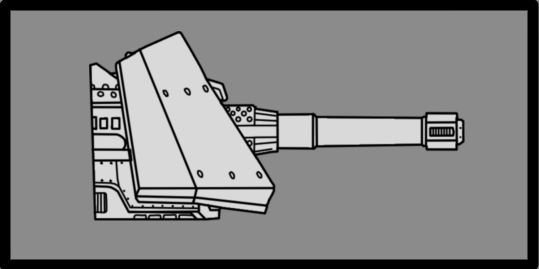

摧毁指挥碉堡
“We have identified a number of heavily-guarded bunkers in this region. We 嫌疑人 they contain 指挥 Nodes central to linking in to the 机器人 广播 Stream.
摧毁 the bunkers, and cut the bots off from the flow of information.— 星系战争 终端 描述
the 摧毁指挥碉堡 is a Main 任务 目标 in 绝地潜兵 2. 绝地潜兵 are tasked with destroying key 机器人 指挥 Bunkers within the map. Due to their 重型 defenses, caution is advised when approaching them.
目标 Steps[edit | edit 来源]
“This heavily-guarded bunker is 思想 to contain a vital 指挥 Node for the 机器人 广播 Stream
— 目标 概述
- Call down, arm and defend a 地狱火炸弹 until it detonates and destroys the bunker.
结构解析[edit | edit 来源]
| 部件名称 | 生命值1 | 护甲值2 | 耐久2 | 主血量占比3 | 溢出上限4 | 构造5 | 致命 | ExDR6 | |
|---|---|---|---|---|---|---|---|---|---|
| Main | 2,500 | 100% | - | - | None | Yes | 0% | ||
| Bunker Wall (4) |
1,500 | 100% | - | - | None | No | 0% | ||
| Fusion Casemates (4) |
250 | 100% | - | - | None | No | 0% | ||
| Fusion Turret (4) |
400 | 100% | - | - | None | No | 0% | ||
| Turret Vent (4) |
400 | 100% | 100% | - | None | Yes | 0% |
Disclaimer: Each highlighted part with a count has its own 生命值. Parts without a count share 生命值 pools.
1) Parts with their HP listed as "Main" do not have their own individual 生命值. All 造成伤害 to these parts is transferred to the enemy's 主生命值 pool.
2) Refer to 护甲 values and enemy 耐久度 as defined in 伤害 for more information.
3) 造成伤害 to a part will also be transferred in part or in full to 主生命值. If set to 0%, no 伤害 is transferred.
4) If set to "Yes", 伤害 transferred 对主血量 is capped by the combined 生命值 and 构造 of the part.
5) 构造 acts as a secondary 生命池 that, once Main or limb 生命值 has been depleted, may decay. The first number is the total 构造 and the second is the 衰退速率. If set to 0/s there is no decay and the 构造 behaves as extra 生命值.
6) ExDR means 爆炸 伤害抗性, and can 射程 from 0 to 100%. If set to 100%, the limb cannot take 爆炸伤害; The 爆炸伤害 will instead 目标 Main. Refer to 伤害 for more information.
- Note: This 机械师, known as Affected By 爆炸 can only occur once per 爆炸, regardless of 100% ExDR parts hit, and the 爆炸's 护甲穿透 must match or exceed 主体护甲 to deal 伤害 对主血量. However, if the same 爆炸 has already damaged Main, this 机械师 will not trigger.
武器配置[edit | edit 来源]
Fusion Falconet

Often found in 加固 positions. Fusion Falconets are a relatively uncommon anti-载具 weapon, capable of penetrating 中型 armour or laying down 爆炸 火焰 with ease. Albeit its slow refire rate makes it seldom seen outside of Fortresses
| 属性 | Value | |
|---|---|---|
| 80弹道伤害 80耐久伤害 | ||
| 范围效果 | 65爆炸 | |
| 1m | ||
| 3m | ||
| 5m | ||
| 3/2/3 | ||
| 5/4/3/0 | ||
| 60RPM / 1s (2-Round Burst) 5秒（Burst 冷却） | ||
| ↔[50.00] ↕[50.00] | ||
| 30 (Impact + Blast) | ||
| 40 (Impact), 15 (Blast) (Impact 布娃娃) | ||
| 20（撞击），15（爆炸） | ||
战术信息[edit | edit 来源]
- The bunker is armed with fusion 炮塔 & casemates 受保护 by 机器人 units, including 小型 pockets further away from the main 建筑.
- The fusion 炮塔 & casemates can 目标 绝地潜兵 from long-射程 unprovoked, so it is advised to be aware of the 炮塔 at all times.
- Since they can prove to be a nuisance it is advised to use
 重型 护甲 penetrating 支援武器 such as the AC-8 机炮 or PLAS-45 Epoch to 摧毁 them from 射程.
重型 护甲 penetrating 支援武器 such as the AC-8 机炮 or PLAS-45 Epoch to 摧毁 them from 射程. - They can also be completely disabled by completing the 妥协 机器人 Defenses 可选目标.
- Since they can prove to be a nuisance it is advised to use
- The main 建筑 of the bunker is encased in
 反坦克 II 护甲 so only 反坦克武器 with 反坦克 II 护甲穿透 such as the EAT-17 消耗性反坦克武器 和 GR-8 无后坐力炮 can 伤害 it. Be sure to aim at the actual bunker itself and not the walls.
反坦克 II 护甲 so only 反坦克武器 with 反坦克 II 护甲穿透 such as the EAT-17 消耗性反坦克武器 和 GR-8 无后坐力炮 can 伤害 it. Be sure to aim at the actual bunker itself and not the walls. - the EAT-411 Leveller, FAF-14 Spear, MS-11 Solo Silo，以及 TD-220 Bastion MK XVI 主炮 can 摧毁 the bunker in 1 shot.
- The EAT-17 消耗性反坦克武器, LAS-99 类星体加农炮, GP-20 Ultimatum, and GR-8 无后坐力炮 can 摧毁 the bunker in 2 shots. The B/MD C4 Pack 和 G-123 铝热弹 need only 2 充能次数 to 摧毁.
- the E/AT-12 反坦克炮台 和 EXO-51 Lumberer 外骨骼机甲 cannon can 摧毁 the bunker in 3-4 shots, depending on 射程.
- the EXO-45 爱国者 外骨骼机甲's rockets and the MLS-4X 突击兵 can 摧毁 the bunker in 4 shots.
图集[edit | edit 来源]
变更历史[edit | edit 来源]
补丁
描述
1.007.000
2026-08-12
Undocumented change
- 已减少 the amount of main 目标 based on 难度
1.006.300
2026-06-16
1.006.001
2026-02-03
Fix
- Fixed an issue where 玩家 could land on 指挥 Bunkers in city missions
1.004.100
2025-10-23
Change
- 已移除 ragdolling from its projectiles 爆炸
1.000.300
2024-04-29
Fixes
- Fixed 不正确 collision being left over after destroying 机器人 bunkers with hellbombs.
Main 目标
Activate Oil Pumps • Activate TCS+ 车站 • Activate 终结族控制系统 • Blitz 搜索与摧毁/终结族 • Blitz: Secure 研究 Site • Chart 终结族 Tunnels • Cleanse Infested District • 收集 Gloom Spore Readings • 收集 Gloom-Infused Oil • 收集 Meteorological Data • Conduct Mobile E-711 撤离 • Deactivate 终结族控制系统 • Deploy Dark Fluid • 摧毁 Spore Lung • 消除 Bile Titans • 消除 Brood 指挥官 • 消除 Chargers • 消除 穿刺虫 • Enable Oil 撤离 • 歼灭 终结族 Swarm • 撤离 E-711 • 撤离 研究 Probe Data • Nuke Nursery • Purge Hatcheries • 重新开始 Pumps • Restore Air Quality
Annex Untapped Mineral Sites • Blitz 搜索与摧毁/机器人 • Blitz: 摧毁 Bio-Processors • 突击兵: 获取 证据 • 突击兵: 撤离 Intel • 突击兵: Secure Black Box • Confiscate Assets • 摧毁指挥碉堡 • 摧毁 广播 网络 • 消除 机器人 移动工厂 • 消除 机器人 Hulks • 消除 Devastators • 歼灭 机器人 Forces • Halt Cyborg 生产 • Neutralize Ground-to-Orbit Defenses • Rapid 获取 • 破坏 Air Base • 破坏 Orgo-Plasma Synthesis • 破坏 Supply Bases • Seize Industrial 复杂
Optional 目标
进行地质勘测 • 摧毁 Rogue 研究 车站 • 发射洲际导弹 • Mobile Radar • 雷达站 • 增援 Pods • SEAF 大炮 • SEAF SAM Site • 传播民主 • Terminate 非法 广播 • Upload Escape Pod Data